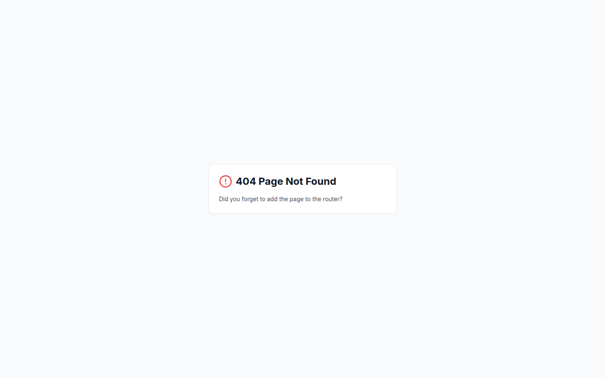
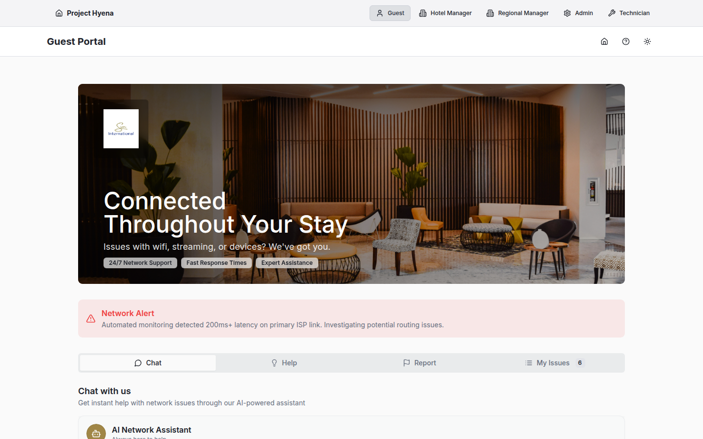

Guest Portal
Functional Specifications & AI Transformation Opportunities
Executive summary
The Guest Portal is a white-labelled, guest-facing interface that empowers hotel guests to self-report connectivity issues, access troubleshooting guides, and track resolution progress without needing to contact reception. This interface transforms the traditional reactive support model into a transparent, self-service experience that improves guest satisfaction while reducing front-desk workload.
Business value
By providing guests with immediate access to issue reporting and status updates, hotels can significantly reduce support call volumes, improve perceived response times, and demonstrate transparency in issue resolution. The self-service model allows guests to feel empowered and informed throughout their stay.
Core functionality
1. Issue reporting
Guests can report connectivity problems directly through an intuitive, mobile-optimised form. The system captures essential details while keeping the process simple and fast.
- Simplified Issue Submission: Pre-categorised issue types (WiFi, TV streaming, device connectivity) minimise guest effort
- Location Auto-Detection: Room number and property information are pre-populated based on session context
- Priority Indicators: System automatically assigns priority based on issue category and affected services
- Confirmation & Ticket Number: Immediate confirmation with unique incident ID for tracking
- Multi-Device Support: Fully responsive design works seamlessly on phones, tablets, and in-room devices

Guest Portal - Issue Reporting Form showing simplified issue submission interface
2. Troubleshooting guides
Before submitting an issue, guests can access guided troubleshooting steps that may resolve common problems instantly. This reduces unnecessary incident creation and empowers guests to solve simple issues independently.
- Common Issues Library: Step-by-step guides for frequent problems (WiFi connection, streaming setup, device pairing)
- Visual Instructions: Clear, non-technical language with visual aids for maximum accessibility
- Quick Wins: Instant resolution for problems like password reset, network switching, or device reconnection
- Escalation Path: If troubleshooting doesn't resolve the issue, seamless transition to incident submission

Guest Portal - Network Status and information interface for guests
3. My issues tracking
Guests can view real-time status of all their reported issues, including estimated resolution times and technician updates. This transparency reduces anxiety and support inquiries.
- Real-Time Status Updates: Live incident status (New, In Progress, Resolved)
- Timeline Visibility: Activity log showing technician actions and progress updates
- Estimated Resolution: Clear communication of expected fix timeframes
- Issue History: All current and past issues for the guest's stay
- Resolution Confirmation: Notification when issue is marked as resolved

Guest Portal - My Issues Dashboard showing guest's reported incidents with status and timeline
User workflows
Workflow 1: reporting a new issue
Guest experiences connectivity issue (e.g., WiFi not working)
Guest opens portal via QR code, in-room tablet, or URL
Guest chooses from pre-defined categories (WiFi Connection, Streaming Issues, Device Pairing)
System pre-fills room/property info; guest adds brief description
Immediate confirmation with incident ID and estimated resolution time
Guest can check "My Issues" anytime to see current status and technician updates
Workflow 2: self-service troubleshooting
Guest experiences problem but before reporting, checks troubleshooting guides
Guest finds relevant guide (e.g., "WiFi Connection Problems")
Guest follows guided troubleshooting steps (restart device, forget/rejoin network, etc.)
Problem fixed without creating incident ticket - instant satisfaction
If troubleshooting fails, direct path to submit incident from guide
Technical features
White-label branding
The Guest Portal dynamically adapts to match the hotel chain's brand identity, providing a seamless, branded experience that maintains brand consistency throughout the guest journey.
- Organisation-specific logo and colour schemes
- Customizable welcome messages and support information
- Property-specific context (location, contact details)
- Multi-language support (English, Afrikaans, Zulu)
Mobile-first design
Recognising that most guests use their smartphones, the portal is optimised for mobile devices with touch-friendly controls and minimal data usage.
- Responsive layout adapts to phone, tablet, and desktop screens
- Large, touch-friendly buttons and input fields
- Optimised images and minimal bandwidth requirements
- Works on any device without app installation
Real-time updates
Status changes are reflected immediately, ensuring guests always have current information about their reported issues.
AI transformation opportunities
By integrating artificial intelligence and machine learning capabilities, the Guest Portal can evolve from a reactive reporting system into a proactive, predictive support platform that anticipates and prevents guest issues before they occur.
1. Predictive issue detection
Current State: Guests manually report issues after they experience problems.
AI-Enhanced Future: System predicts and alerts staff to potential issues before guests notice them.
- Proactive Monitoring: AI analyses network performance metrics in real-time to detect degradation patterns before they cause guest-facing failures
- Guest Behavior Analysis: ML models learn typical usage patterns (check-in time, streaming preferences, device count) and flag anomalies that might indicate hidden problems
- Environmental Correlation: AI connects external factors (weather, load shedding schedules, ISP outages) to predict impact on specific properties or rooms
- Pre-emptive Action: System automatically creates internal maintenance tickets before guest complaints occur
Business impact example
AI detects that Room 305's WiFi signal strength has dropped significantly over the past hour—still functional but trending toward failure. System alerts technicians to replace the access point during housekeeping, preventing a guest complaint that evening.
2. Intelligent chatbot support
Current State: Static troubleshooting guides and manual incident creation.
AI-Enhanced Future: Conversational AI assistant provides personalized, real-time troubleshooting and support.
- Natural Language Interaction: Guests describe problems in their own words; AI understands context and intent
- Guided Diagnostics: AI asks clarifying questions to narrow down root cause (device type, error messages, when problem started)
- Personalized Solutions: AI provides device-specific instructions based on guest's phone/laptop model
- Multi-Language Support: Real-time translation for South African languages (English, Afrikaans, Zulu, Xhosa)
- Escalation Intelligence: AI knows when human intervention is needed and seamlessly creates incident with all diagnostic context
- Learning Loop: Continuously improves responses based on resolution success rates
3. Automated root cause analysis
Current State: Technicians manually investigate each incident to determine cause.
AI-Enhanced Future: AI instantly analyses symptoms, correlates with system data, and suggests likely root cause.
- Pattern Recognition: AI identifies common failure signatures (DHCP issues, DNS problems, access point overload)
- Historical Correlation: Compares current issue with thousands of past incidents to suggest most likely cause
- Infrastructure Awareness: AI has real-time visibility into network topology, device health, and configuration
- Diagnostic Recommendations: Suggests specific troubleshooting steps for technicians based on predicted root cause
4. Sentiment analysis & escalation
Current State: All incidents treated equally regardless of guest frustration level.
AI-Enhanced Future: AI detects guest emotion and automatically escalates critical situations.
- Text Analysis: NLP detects frustration, urgency, or distress in guest-written descriptions
- Automatic Prioritisation: High-emotion incidents automatically elevated to critical priority
- VIP Detection: Integration with hotel PMS to identify loyalty program members or high-value guests for priority handling
- Proactive Communication: AI triggers immediate notifications to management for at-risk guest situations
5. Predictive troubleshooting
Current State: Generic troubleshooting guides for all guests.
AI-Enhanced Future: AI predicts exact issue and provides targeted solution instantly.
- Context Awareness: AI knows guest's device type, operating system, browser, previous issues
- Smart Suggestions: "Based on your iPhone and our network logs, try these 3 steps..."
- Success Prediction: AI estimates probability each troubleshooting step will work for this specific scenario
- Adaptive Guidance: Adjusts recommendations in real-time based on guest's progress through steps
6. Automated status updates
Current State: Manual technician updates on incident timeline.
AI-Enhanced Future: System automatically generates natural-language status updates as work progresses.
- Work Recognition: AI detects when technician actions occur (access point reboot, cable replacement, configuration change)
- Guest-Friendly Translation: Converts technical actions into clear guest communications ("Our team is upgrading your room's network equipment")
- Proactive Notifications: Automatically sends SMS/email when major milestones occur (technician assigned, technician en route, issue resolved)
- Completion Detection: AI verifies network performance has returned to normal before marking incident resolved
7. Guest experience personalization
Current State: Identical portal experience for all guests.
AI-Enhanced Future: Portal adapts to individual guest preferences and history.
- Returning Guest Recognition: AI remembers previous issues and prefers solutions that worked before
- Preference Learning: Adapts communication style (technical detail vs. simple explanations) based on guest responses
- Proactive Recommendations: Suggests WiFi band selection or device settings based on guest's usage patterns
- Issue Prevention: "We noticed you stream in 4K—we've already optimised your room's connection"
Project Hyena - Network Monitoring Platform for Hospitality
Document Version 1.0 | November 2025
This document is proprietary and confidential. Unauthorized distribution is prohibited.